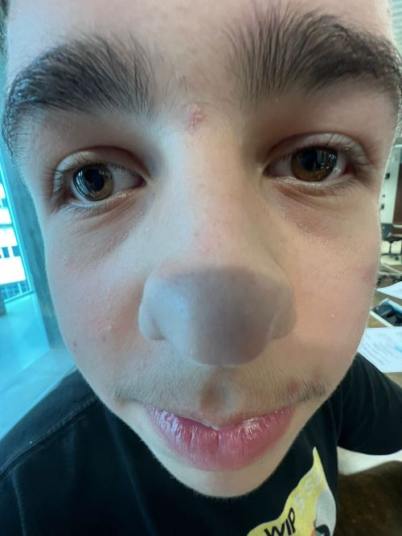
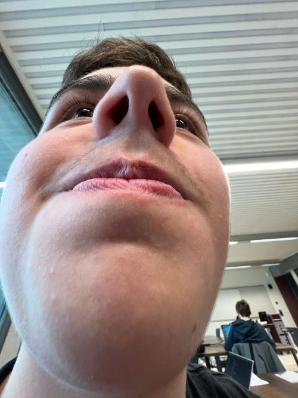
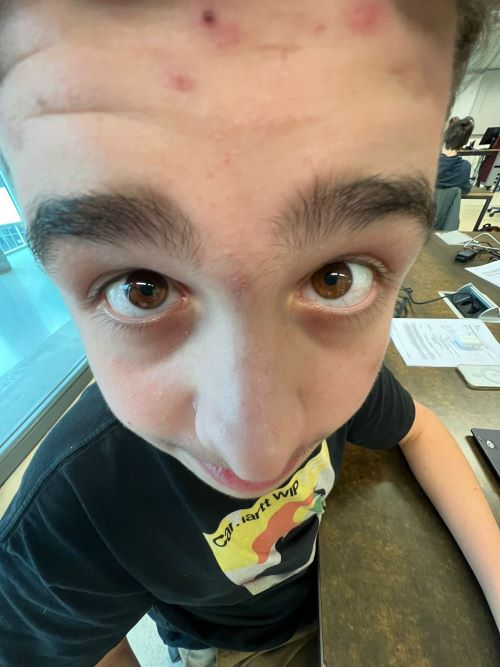

Über den jungen Göschel
Willkommen auf der Website über den jungen Göschel. Der junge jönglische Jünglin Göschel, auch Goschelius Goschalus genannt, ist Teil der 27. Nachjagtstaffel der 4. Nachtägerdivison. Diese ist in Gipf-Oberfrick stationiert.
Fotos

Der junge Göschel in der Frontansicht (von vorne).

Der junge Göschel in der Untenansicht (von unten).

Der junge Göschel in der Obenansicht (von oben).
Der junge Göschel vor seiner BF 109 G-6 "Rasender Roland" (vermutlich um 1943). Der "Rasende Roland" ist in Gipf-Oberfrick stationiert